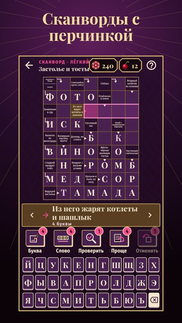

Сканворды для взрослых
18+Вечерняя программа для тех, кто понимает шутки
Сканворды и филворды со «взрослыми словечками» и вопросами с двойным смыслом. Ведущая вечера — Мадам Роза.
Застолье и тосты, флирт и свидания, бар и коктейли, тёща и корпоратив, казино и ночная жизнь — разгадывай с улыбкой. Без мата и пошлости: весь перчик — в формулировках.

- Два режима в одной игре: 300 сканвордов со стрелками и 300 филвордов.
- 15 пикантных тем: застолье, флирт, бар, брак и тёща, анекдоты, курорт, страсть и нежность, казино, деньги и заначка, офис, мода и соблазн, холостяцкая жизнь, ночная жизнь, ревность, сленг.
- Остроумные вопросы: у каждого слова три определения — от простого до хитрого с подмигиванием.
- Номер дня и слово дня: номер один для всех, пропущенные за неделю ждут в архиве.
- Три задания каждый день, цель недели и подарки от заведения.
- Праздничные вечера к Новому году, 14 февраля, 23 февраля, 8 марта и бархатному сезону — с брошами на память.
- Личный словарик: каждое разгаданное слово с пояснением, поиск и избранное.
- Удобные подсказки: открой букву или слово, проверь себя, возьми определение попроще.
- Играй без интернета. Без покупок.
Присаживайся, вечер только начинается.